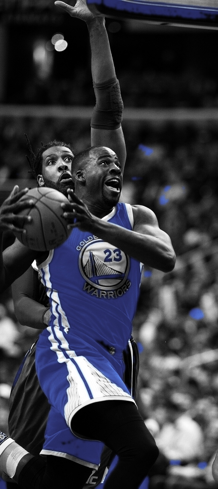
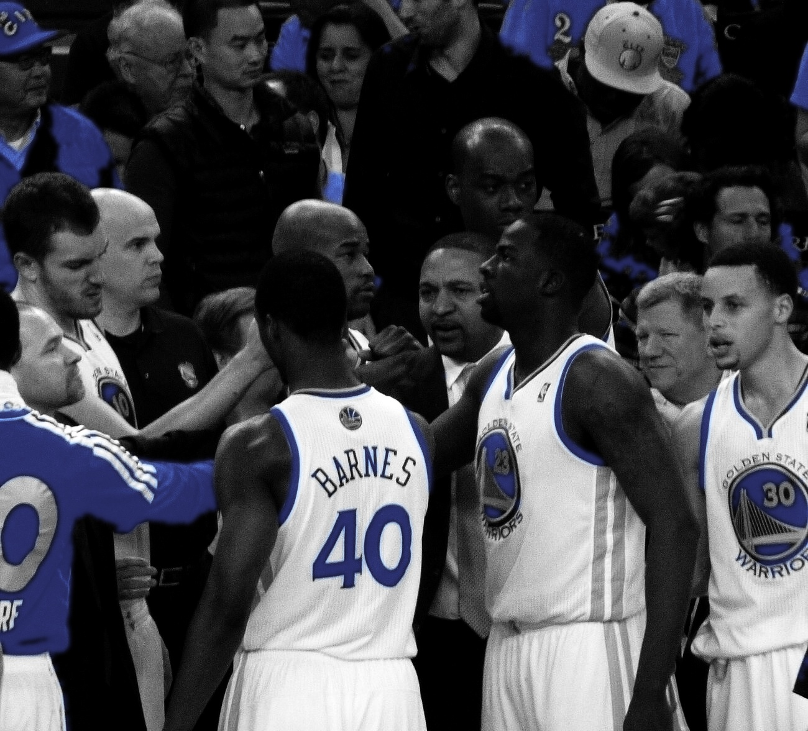

GOLDEN STATE WARRIORS
FICHA
STEVE KERR · ENTRENADOR
«y yo también»
ANDRE IGUODALA · 2016 · FOTO: KEITH ALLISON, CC BY-SA 2.0

DRAYMOND GREEN · 2016 · FOTO: KEITH ALLISON, CC BY-SA 2.0
OTRO PARTIDO, OTRA TEMPORADA (2013) · FOTO: MATTHEW ADDIE, CC BY 2.0
12/2/2018 · FINALRECREACIÓN
+46